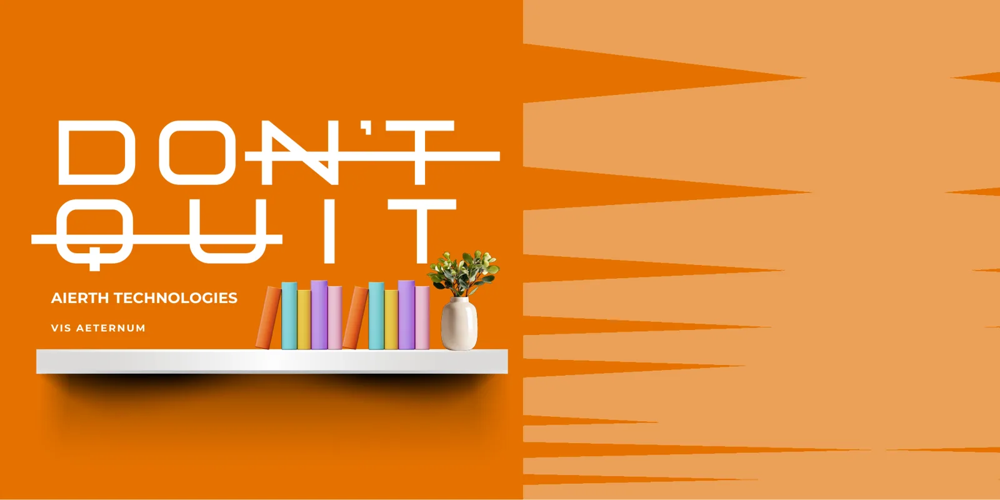
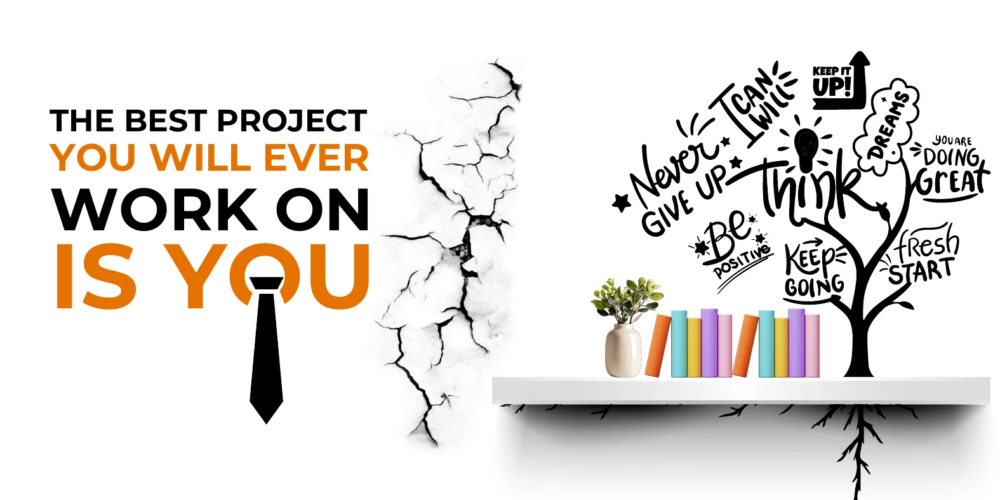

Graphic design · Campaigns · Environmental
Campaigns, not just posters.
Every graphic I make has a job: get the swipe, explain the offer, or change how a room feels. Here is how a few of those ideas were built.
01 · Social campaign for Aierth Technologies
Find Your Tech Val
For Aierth's Valentine cohort, I turned course selection into a dating app. Instead of a list of programmes, each tech track became a personality you could "match" with: The Builder, The Genius, The Protective One.
The series borrows the language people already know from dating apps (Swipe Right, If you…, Your match is…) so choosing a career path felt personal, playful and easy to share.
Try it: swipe right, drag the card, or pick a personality.
1 / 11
The system
One layout, ten personalities.
Every poster shares the same grid: the name in coral, a navy "If you…" block, the match line, and the robot mascot in a new pose. Only the gradient and the props change, so the series reads as one campaign in a feed while each post still feels new.
02 · Wall graphics for Aierth Technologies
Walls that talk back.
Large-format pieces for Aierth's learning space. Students see a wall every day, so each one needed an idea that rewards a second look.

Read it twice.
At a glance it says Don't Quit. The strike-throughs hide a second message: remove the crossed-out letters and it reads DO IT. Encouragement first, then a nudge to act.

Growth, drawn literally.
The headline speaks to career ambition, with a tie standing in for the "O" in "you". The wall cracks open, and a tree of encouragement grows out of the bookshelf, its roots reaching below the shelf. Learning is what it grows from.
Want the full story behind a brand?
The Station MagazineKept the recognition. Removed the noise.
A logo refresh, type direction and the carousel templates a Lagos culture magazine posts with every day.
Read case study